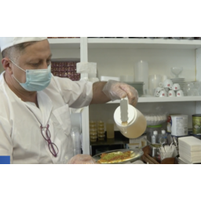
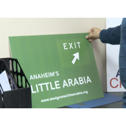
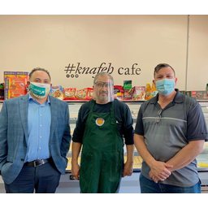
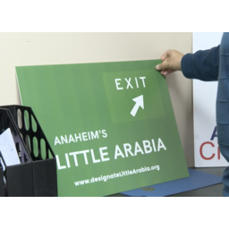
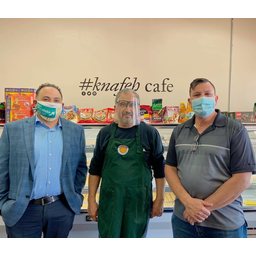
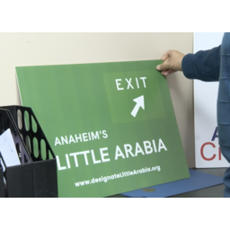
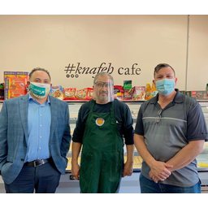

Jeanine Nassar
My name is Jeanine Nassar and I am a Political Science Administrative Studies major at the University of California at Riverside, and an aspiring immigration lawyer. I am dedicated to community based work and social justice which is where I get most of my passions. My passion for immigration reform stems from my family and friends' lives as I have first handedly witnessed how our current laws harm people aspiring to better themselves. I have held many leadership positions in the past that have all been of great benefit to me, each of them furthering my passion for a social issue, such as immigration.
To begin I was President of clubs around campus in my high school, and plan on doing the same in college, and this has taught me time management and organizational skills. I have had to learn how to adapt to different situations, which has taught me to be open minded and easy going. Currently I am an IMPACT Intern with the Arab American Civic Council, a non profit organization that further advances Arab American advocacy in Southern California. This internship strives to advance this advocacy workEach position I have held has been a constant learning experience that has opened my eyes to a multitude of different ideas.
My job consists of working with other non profit organizations to aid them in their goal, communicate with government officials, all social media content, and drafting up all work that is posted on behalf of the organization. We have worked towards commemorating the month of April as Arab American Heritage Month in our surrounding cities, which has been a very successful project, with over 10 new cities passing a resolution acknowledging the month of April to be Arab American Heritage Month. This position also highly encourages networking which is of great importance when completing tasks like the one we advertise at the civic council. It has been a group effort to achieve all of these accomplishments.
As an active member of the arab community, I first handedly witnessed and experienced the work our community is in desperate need of. I aspire to further not only Arab American advocacy work, but represent all those who do not have proper representation and benefits in our society.
Enter bio here
Enter bio here
The Habit
Intern at the Arab American Civic Council
• Communicating with other nonprofits to further advocacy
• Review and creates all social media content
• Attending nationwide meetings to network and connect with people
President of Senior Class
• Ran sessions to plan student rallies
• Reviewed senior budget
• Modified senior activities in response to COVID
Education
UC Riverside
University of California Riverside
Portfolio

 




